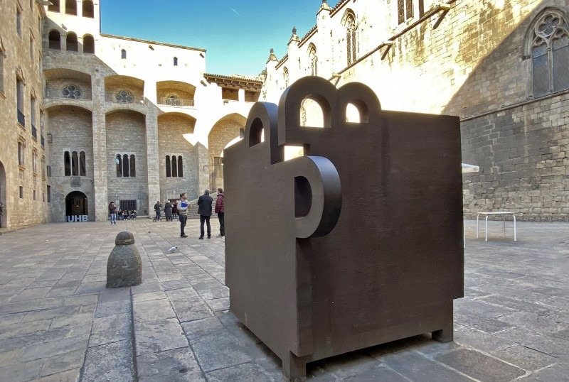

¡Exacto! El Archivo de la Corona de Aragón.
🏛️ Archivos de la Ciudad:
Esas cerámicas con un caballo y un carruaje son las primeras señales de tráfico de Barcelona (mediados del siglo XIX). Se instalaron para indicar el sentido obligatorio y evitar que los carros se quedaran encallados en las calles más estrechas de la ciudad amurallada.
Tus pies están en el lugar correcto. Ahora lee la continuación de la carta:
"Bien, espero que vuestra astucia os haya traído aquí antes que a las manos negras de Barcino. Esta prueba será difícil; buscad ayuda en el reflejo de la historia.
De frente, imponente hierro encontrarás, y sólo si miras a través de su ojo serás tú el que verás. Deberás mirar desde dónde aún queda algo tan antiguo como yo. Ahora que sabes dónde mirar, la siguiente pista podrás encontrar.
Si habéis llegado al punto exacto, el reflejo de la ciudad os hablará. Para abrir mi cofre (imaginario), necesitarás contar desde ese lugar que hace de espejo de la plaza:
Si sois capaces de verlo todo, podréis leer mi mensaje. Ahora que tenéis el código os daré tres opciones para que podáis comprobar si habéis mirado bien a través del espejo de la ciudad:
I) CÓDIGO I - XI - I - II - I
II) CÓDIGO II - XI - II - I - I
III) CÓDIGO II - X - II - I - I
¿Qué código de los tres habéis descifrado?"